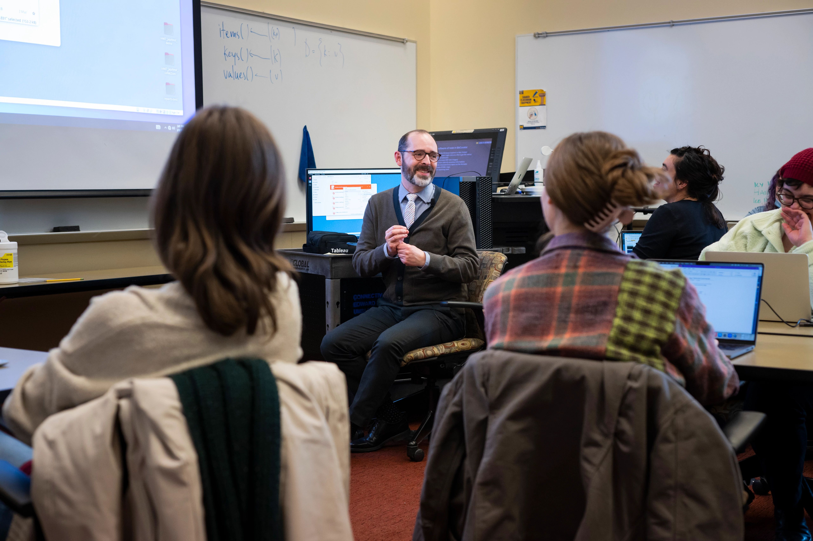

Brief Introduction
At the University of Michigan School of Information (UMSI), we are committed to supporting our students' academic success by offering a wide array of resources and services. Our academic advising team provides personalized guidance to help you navigate your curriculum, select courses, and address any academic challenges or questions you may encounter during your studies. UMSI students also have access to the extensive collections and study spaces within the University Library system, offering both digital and physical resources essential for research and coursework. Additionally, our specialized tutoring services and the UMSI Writing Center are available to support you in mastering complex subjects and enhancing your written communication skills. By utilizing these academic resources, UMSI students can thrive in their studies and achieve their educational goals.

Academic Advising Overview
Academic Advising is a process where students envision, execute, and reflect on their academic plans with guidance from a qualified UMSI Academic Advisor. Students share their goals, challenges, and questions with their academic advisor, and their academic advisor contributes knowledge of university and program requirements, policies, and processes. Together, we develop an academic plan that aligns with the student's personal and professional goals.
For information about how to schedule an appointment with your advisor, visit the Connecting with an Advisor page.
How can your Academic Advisor help you?
- Creating an individualized academic plan
- Interpreting an academic policy or procedure
- Discussing concerns about a particular course
- Connecting with student support resources and services
- Navigating a disruption to your MSI experience
What type of appointment should I book?
Scheduled 1:1 Appointments
Scheduled 1:1 appointments are for students who need extended time with an advisor to answer more complex questions and situations. Appointments are available in 30-minute increments and can be booked through Navigate360.
Examples of discussion topics:
- Course planning and timeline to graduation.
- Academic policies and degree requirements
- Considering and/or declaring a dual degree or graduate certificate
- Resources available at UMSI and UM
- Concerns related to academic progress
Drop-In 1:1 Appointments
Utilizing the office hours tool drop-in 1:1 appointments are an opportunity to meet 1:1 with an academic advisor in a drop-in format. Students needing 10 minutes or less to discuss an academic concern should consider attending a drop-in session.
Examples of discussion topics:
- Backpacking and/or registration
- UMSI academic policies
- Resources available at UMSI and UM
- Degree requirements
- General questions